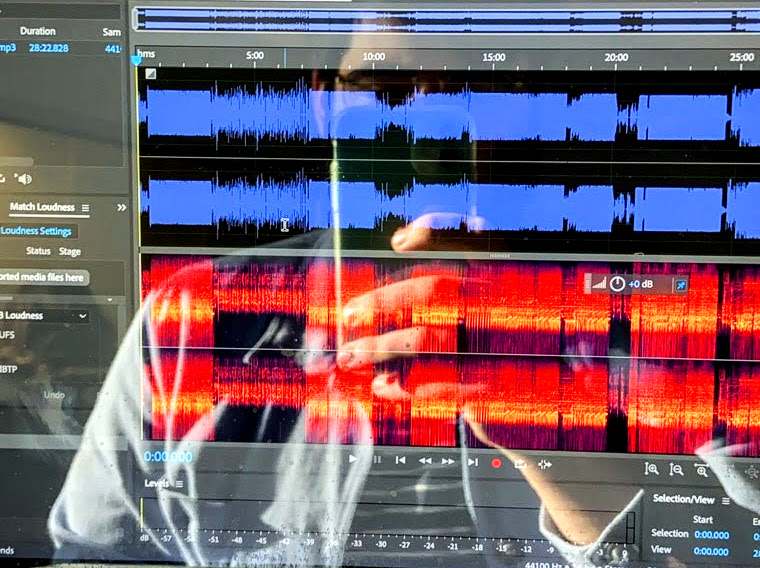

davis land
audio producer and engineer in houston, tx

about
hello, thanks for stumbling into my web zone. i'm glad you're here. currently, i'm senior producer in the houston public media newsroom, where i spin plates and put out fires for the local morning edition broadcast. i also make a secret internet radio show called good omens, a mix of slow radio, audio fiction, and the sensibilities of community radio i learned at keos. for a couple years i produced dear, a series of weekly audio letters between friends. previously, i interned at both wbur in the newscast unit and atlantic public media/transom.org producing features, sonic ids, and helping out with the website.
here's my resume if you'd like to know more.